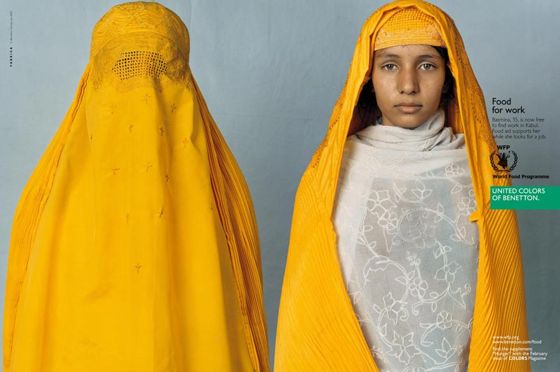

© 1984/85 Benetton Group S.p.A. – Photo: Oliviero Toscani.
La comunicazione di United Colors of Benetton si basa su una intuizione di Luciano Benetton che dice:
'La comunicazione non si deve comprare da un fornitore esterno, deve nascere dal cuore dell'impresa'.
Parte da questo assunto la strategia di comunicazione di un marchio che, da più di venti anni, punta, attraverso la capitalizzazione dell'immagine, alla creazione di 'valore'.
Un'impresa che sceglie di dare importanza al 'valore', che sceglie di creare 'valore' non si rivolge più al consumatore ma all'individuo.
Il consumo vero e proprio viene riposizionato in un contesto di vita. Entrando nell'universo dei valori, la marca libera il prodotto dall'universo della merce e della fabbrica, ne fa un essere sociale a sé stante. Rivolgendosi a un individuo, invece che a un cliente, la marca può identificare il suo target non a partire dall'età o dal reddito dei consumatori, ma sulla base di una visione comune di ciò che è importante, a partire da un insieme di valori condivisi.
'Tutti i colori del mondo' era uno dei primi slogan cha accompagnavano le pubblicità Benetton, diventando poi 'I colori uniti di Benetton'. Quest'idea dei colori uniti appare talmente forte da convincere l'impresa ad adottarla come marchio.
Per la prima volta nella storia dei marchi commerciali, lo slogan 'United Colors of Benetton' diventa marchio.
(UCB advertising presentation 2006, Bennetton Group, viewed 06 March 2008, http://press.benettongroup.com/ben_en/about/campaigns/history/.)
Adapted and reproduced with the permission from Benetton group.
Answer the following questions in English.
- What is Benetton's advertising philosophy?
That communication needs to come from within the company itself and not bought from an external supplier. - How is it different to traditional philosophy?
It takes advantage of images in order to create values. A company that chooses to give priority to creating values is addressing the individual and not the consumer. - How did the brand name, 'United Colors of Benetton' come about?
'United Colors of Benetton' was one of the slogans used in the early advertising campaigns. The idea of united colours was so powerful that it convinced the company to use it as its trademark.
Clicca qui to see the answers.
'United Colors of Benetton' è un'azienda di abbigliamento ma con una filosofia pubblicitaria orientata al sociale.
Le campagne più recenti comprendono:
- 2001, Volunteers in Colors
- 2003, Food for Life
- 2004, James & Other Apes.
Research one of the above advertising campaigns of 'United Colors of Benetton', for example Food for Life.

© 2003 Beneton Group S.p.A. — Photo: James Mollison
Select an image from the Benetton campaign that appeals or has a strong impact on you. Explain the reasons why.
Use the image as a prompt to initiate further discussion.
Refer to Stimulus for tips to help you with this attività.